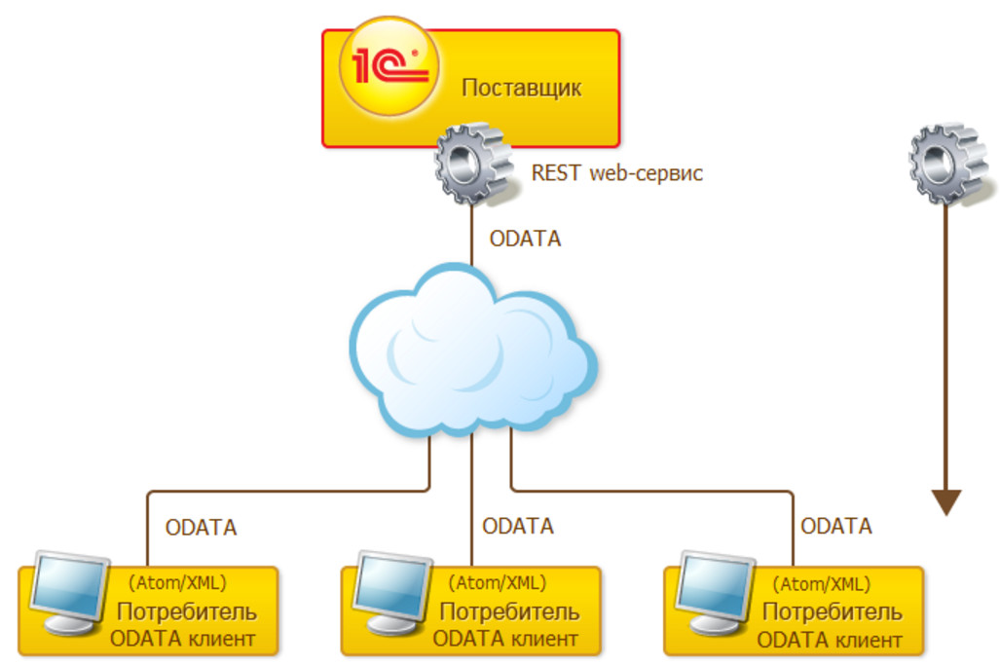

Автоматически генерируемый REST интерфейс прикладных решений 1С:Предприятия
Реализовано в версии 8.3.5.1068.
Теперь платформа может автоматически формировать REST интерфейс для всего прикладного решения. Вы привычным образом публикуете его на веб-сервере и после этого сторонние системы могут обращаться к вашему приложению с помощью HTTP запросов.
REST интерфейс позволяет читать данные 1С:Предприятия, изменять их, создавать новые объекты данных и удалять существующие.
Вы можете использовать REST интерфейс для таких задач как:
Типичные операции, выполняемые через REST интерфейс это:
В качестве протокола доступа платформа использует протокол OData версии 3.0. Это открытый веб-протокол для запроса и обновления данных. Он позволяет оперировать данными, используя в качестве запросов HTTP-команды. Получать ответы можно в различных форматах, но пока мы поддерживаем только работу с данными в формате Atom/XML.
В платформе мы реализовали только серверную часть REST сервисов. То есть прикладное решение может автоматически поставлять свою функциональность через REST сервисы. Для взаимодействия со сторонними REST сервисами из 1С:Предприятия (для организации клиентской части) можно использовать имеющиеся в платформе средства работы с HTTP: объекты HTTPСоединение, HTTPЗапрос и HTTPОтвет.

Однако основную задачу REST интерфейса прикладных решений мы видим в интеграции со сторонними системами. И тут проблемы не возникает, ведь клиенты OData существует практически для всех значимых платформ:
Использовать стандартный интерфейс OData прикладного решения просто:
В REST интерфейсе доступны практически все основные объекты конфигурации: справочники, документы, константы, перечисления, планы обмена, регистры накопления, расчета, бухгалтерии и сведений, виртуальные таблицы периодического регистра сведений, регистров бухгалтерии и регистров накопления, планы счетов, видов характеристик и видов расчета, бизнес-процессы, задачи и журналы документов.
Недоступными на данный момент являются отчеты и обработки, команды, критерии отбора, регламентные задания, внешние источники данных и пользователи.
В REST интерфейсе доступны реквизиты объектов конфигурации, доступны операции создания, чтения, модификации и удаления данных, а также некоторые методы встроенного языка. Например:
Чтение данных выполняется GET-запросом. Например, чтение списка справочника Goods (здесь и далее для краткости приведены только заголовки запросов):
GET /OData_Tests_Infobase/odata/standard.odata/Catalog_Goods
Например, чтение данных одного элемента справочника Goods по GUID’у:
GET /OData_Tests_Infobase/odata/standard.odata/Catalog_Goods(guid'7f4b5034-0331-11e3-b914-5404a6a68c42')
Создание нового элемента данных выполняется POST-запросом. В качестве значения ссылки передается нулевой GUID. При создании и модификации объектов значения свойств передаются в теле запроса в формате XML (здесь текст запроса приведён полностью):
POST /OData_Tests_Infobase/odata/standard.odata/Catalog_Goods HTTP/1.1
Content-Type: application/atom+xml
DataServiceVersion: 3.0;NetFx
MaxDataServiceVersion: 3.0;NetFx
Accept: application/atom+xml,application/xml
Accept-Charset: UTF-8
User-Agent: 1C-Enterprise
Host: test-host:8090
Content-Length: 1610
<?xml version="1.0" encoding="utf-8"?>
<entry xmlns=http://www.w3.org/2005/Atom
xmlns:d=http://schemas.microsoft.com/ado/2007/08/dataservices
xmlns:m=http://schemas.microsoft.com/ado/2007/08/dataservices/metadata
xmlns:georss=http://www.georss.org/georss
xmlns:gml=http://www.opengis.net/gml>
<category term="EnterpriseV8.CatalogGoods" scheme=http://schemas.microsoft.com/ado/2007/08/dataservices/scheme />
<id />
<title />
<updated>2013-08-12T11:48:25Z</updated>
<author>
<name />
</author>
<content type="application/xml">
<m:properties>
<d:Code>157</d:Code>
<d:DeletionMark>false</d:DeletionMark>
<d:Description>Майка синяя</d:Description>
<d:IsFolder>false</d:IsFolder>
<d:Parent_Key m:null="true" />
<d:Ref_Key m:type="Edm.Guid">00000000-0000-0000-0000-000000000000</d:Ref_Key>
<d:Артикул m:null="true" />
<d:Поставщик_Key>F400322D-7AE8-4803-A7BE-0D80E525E8C2</d:Поставщик_Key>
</m:properties>
</content>
</entry>
Модификация существующих данных выполняется PATCH-запросом. Например, изменение данных одного элемента справочника Goods по GUID’у:
PATCH /OData_Tests_Infobase/odata/standard.odata/Catalog_Goods(guid'7f4b5034-0331-11e3-b914-5404a6a68c42')
Для удаления данных используется DELETE-запрос (пометка на удаление будет реализована в дальнейшем отдельной ODATA-операцией):
DELETE /OData_Tests_Infobase/odata/standard.odata/Catalog_Goods(guid'7f4b5034-0331-11e3-b914-5404a6a68c42')
Методы объектов встроенного языка выполняются POST-запросами. Например, проведение документа:
POST /OData_Tests_Infobase/odata/standard.odata/Document_Invoice(guid'17ed2041-0345-11e3-b914-5404a6a68c42')/Post()
В случае ошибочной ситуации 1С:Предприятие возвращает ответ с HTTP-статусом 4XX или 5XX. Статус 4XX говорит о неверных действиях клиента, статус 5XX – об ошибке на сервере. В случае статуса 4XX 1С:Предприятие пытается помочь клиенту понять причину ошибки и может передать дополнительный внутренний код ошибки и информационное сообщение.
При чтении и записи данных с помощью REST интерфейса платформа выполняет все обычные проверки прав и вызывает обработчики событий, за исключением проверки заполнения.
При работе через REST интерфейс поддерживается оптимистическая блокировка данных. При запросе данных (одного объекта или списка) вместе с ними платформа возвращает значение поля (полей) ВерсияДанных. В последующих запросах PUT, PATCH и DELETE с этими же данными, можно передать 1С:Предприятию версию считанных данных. Если к этому моменту версия данных, находящихся в информационной базе, не изменилась, запрошенное действие выполняется.
При получении списков данных можно использовать стандартные условия фильтрации ODATA запросов. Например, получить товары, у которых цена меньше или равна 3,5 или больше 200:
GET /OData_Tests_Infobase/odata/standard.odata/Catalog_Goods?$filter=Price le 3.5 or Price gt 200
Благодаря универсальности и кроссплатформенности мы позиционируем автоматически генерируемый REST интерфейс как основной инструмент для интеграции со сторонними системами. Поэтому развитие и поддержку web-расширения мы планируем прекратить.
Расширение поддержки протокола OData
Реализовано в версии 8.3.8.1652.
В REST интерфейсе прикладных решений, о котором мы рассказывали раньше, мы реализовали не все, а только основные возможности протокола OData. Они позволяют получать доступ к внутренним объектам 1С:Предприятия с помощью URL-запросов. Однако опыт использования REST интерфейса показал, что для быстрой и гибкой интеграции этих возможностей не всегда хватает.
Поэтому мы расширили поддержку стандартных возможностей протокола OData, а также реализовали некоторые функции, которых нет в протоколе, но они используются 1С:Предприятием. Кроме этого мы добавили пару возможностей, которые, судя по вашим сообщениям, являются наиболее востребованными. Это отбор по полям составного типа, и отбор по реквизитам табличных частей.
Отбор по ссылочному значению реквизита составного типа
Ранее в REST интерфейсе уже была возможность отбирать по значениям ссылочных полей. Например, в следующем примере будут получены записи регистра, относящиеся к валюте с уникальным идентификатором 7f4b5034-0331-11e3-b914-5404a6a68c42.
GET /OData_Test_Infobase/odata/standard.odata/InformationRegister_КурсыВалют?$filter=Валюта eq guid'7f4b5034-0331-11e3-b914-5404a6a68c42'
Однако если поле, по которому осуществляется отбор (Валюта), имело составной тип, то такое условие уже не работало. И возможности отбирать по таким полям не существовало.
Теперь мы такую возможность добавили. Например, регистр сведений Характеристики содержит измерение Объект. Это измерение имеет составной тип, включающий ссылку на справочник Товары. Тогда следующий пример вернёт только те записи регистра, которые относятся к товару, имеющему guid равный 0d4a79cb-9843-4147-bcd9-80ac3ca2b9c7.
GET /OData_Test_Infobase/odata/standard.odata/InformationRegister_Характеристики?$filter=Объект eq cast(guid'0d4a79cb-9843-4147-bcd9-80ac3ca2b9c7', 'Catalog_Товары')
В этом примере используется новая функция cast, о которой мы расскажем далее.
Новые опции запросов
В REST интерфейсе был реализован ограниченный набор опций: $format, $metada, $filter и $select. Теперь мы добавили к ним ещё несколько полезных опций, которые должны облегчить решение задач интеграции.
$orderby
Указывает порядок, в котором будут получены записи. Следующий пример возвращает список товаров в порядке возрастания наименования.
GET /OData_Test_Infobase/odata/standard.odata/Catalog_Товары?$orderby=Наименование asc
$skip
Отбрасывает первую часть результата запроса. Следующий пример возвращает список товаров, начиная с третьей позиции.
GET /OData_Test_Infobase/odata/standard.odata/Catalog_Товары?$orderby=Наименование asc&$skip=2
Эту опцию, совместно с опцией $top, вы можете использовать для постраничного вывода результатов. Следующий пример возвращает список товаров с 3 по 13 позиции.
GET /OData_Test_Infobase/odata/standard.odata/Catalog_Товары?$orderby=Наименование asc&$skip=2?$top=11
$inlinecount
Дополняет результат запроса количеством записей, полученных запросом. Следующий пример возвращает список товаров и их количество.
GET /OData_Test_Infobase/odata/standard.odata/Catalog_Товары?$inlinecount=allpages
Результат такого запроса в формате JSON будет выглядеть следующим образом:
{
"odata.metadata": "http://localhost/OData_Test_Infobase/odata/standard.odata/$metadata#Catalog_Товары ",
"odata.count": "19",
"value": [{...}, ..., {...}]
}
$count
Возвращает только количество элементов, содержащихся в результате запроса. Следующий пример возвращает количество товаров.
GET /OData_Test_Infobase/odata/standard.odata/Catalog_Товары?$count
Новые функции, которые вы можете использовать в опциях $filter и $orderby
При отборе и при сортировке результатов вы можете использовать теперь новые функции, предусмотренные стандартом OData. Но кроме этого мы добавили ещё несколько удобных функций, стандартом не предусмотренных, но давно используемых в 1С:Предприятии.
Функции, предусмотренные стандартом OData
substring
Возвращает подстроку от значения поля. Подстрока начинается с указанной позиции, и имеет указанную длину. Например, если в информационной базе артикул товара формируется по принципу <буквы>-<цифры>, то следующий запрос возвращает те товары, у которых буквенная часть артикула содержит два символа (ОБ-00055, ПС-0002 и т.д.).
GET /OData_Test_Infobase/odata/standard.odata/Catalog_Товары?$filter=substring(Артикул, 2, 1) eq '-'
substringof
Определяет, содержится ли указанная подстрока в значении поля. Следующий запрос возвращает те товары, у которых в артикуле содержится подстрока ПРД.
GET /OData_Test_Infobase/odata/standard.odata/Catalog_Товары?$filter=substringof('ПРД', Артикул)
startswith, endswith
Определяет, начинается ли (заканчивается ли) значение поля с указанной подстроки. Следующий пример возвращает товары, артикул которых начинается с VEKO.
GET /OData_Test_Infobase/odata/standard.odata/Catalog_Товары?$filter=startswith(Артикул, 'VEKO')
concat
Объединяет две строки в одну. Следующий пример возвращает контрагентов, для связи с которыми используется телефонный номер +7(999)456-87-68.
GET /OData_Test_Infobase/odata/standard.odata/Catalog_Контрагенты?$filter=substringof('+7(999)456-87-68', concat(Телефон, Факс))
year, month, day, hour, minute, second
Возвращает год (номер месяца, день, количество часов, минут, секунд) от значения поля. Следующий пример возвращает все документы оплаты за 2015 год.
GET /OData_Test_Infobase/odata/standard.odata/Document_Оплата?$filter=year(Дата) eq 2015
isof
Определяет, имеет ли значение поля указанный тип. Например, в справочнике Товары указано, что поле Артикул используется только для элементов. Тогда следующий пример вернёт только элементы справочника, без групп. Потому что для групп значение этого поля имеет тип NULL.
GET /OData_Test_Infobase/odata/standard.odata/Catalog_Товары?$filter=isof(Артикул, 'String')
cast
Приводит значение к указанному типу. Может использоваться при отборе по полям составного типа. В следующем примере эта функция создаёт значение ссылки на справочник Товары, которая имеет указанный уникальный идентификатор.
GET /OData_Test_Infobase/odata/standard.odata/InformationRegister_Характеристики?$filter=Объект eq cast(guid'0d4a79cb-9843-4147-bcd9-80ac3ca2b9c7', 'Catalog_Товары')
round
Округляет значение до ближайшего целого числа.
Функции, специфичные для 1С:Предприятия (не предусмотренные стандартом OData)
Отбор по значениям реквизитов табличных частей
Для того чтобы реализовать возможность отбора по реквизитам табличных частей, мы добавили два новых оператора: any и all. Они применяют логическое выражение к каждой строке табличной части и возвращают значение Истина, если хотя бы для одной строки (any) (для всех строк (all)) это логическое выражение верно. Следующий пример возвращает все документы продажи, в которых есть товары с ценой больше 10000.
GET /OData_Test_Infobase/odata/standard.odata/Document_РасходТовара?$filter=Товары/any(d: d/Цена gt 10000)
Небольшое пояснение по синтаксису. Оператор any предваряется именем табличной части (Товары), и отделяется от неё слешем. В скобках указывается имя переменной (d), которая будет использована в